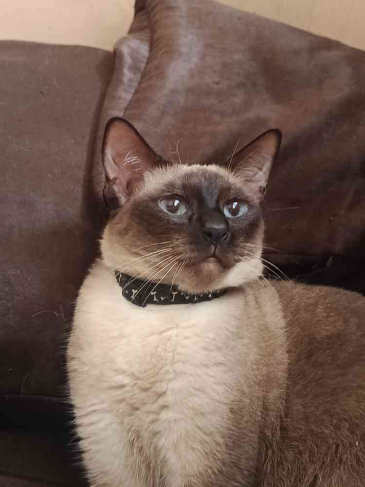
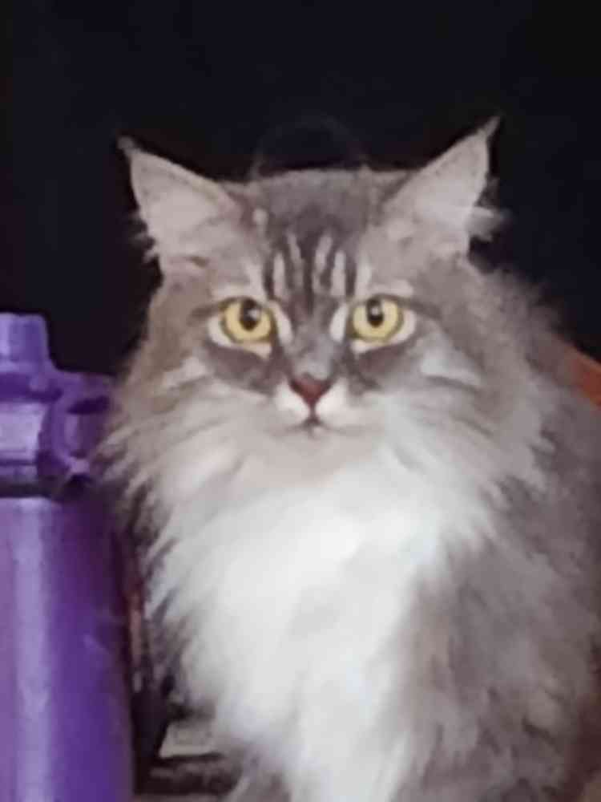
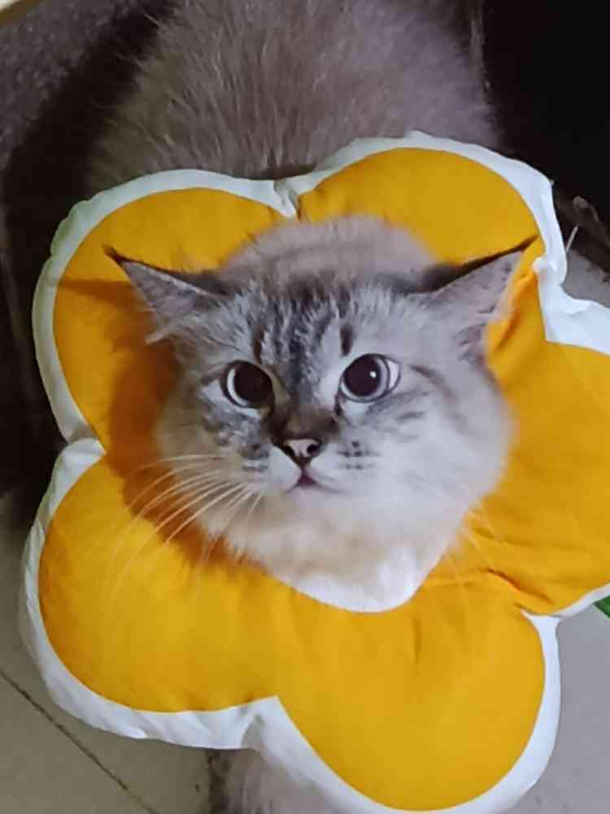

About
I am a 3rd Year student in BSIT in the University of Science and Technology. I love playing around with Fedora Kde and I also love to play games as well such as Minecraft, Stardew Valley, and some other ones. I also play around (although rarely nowadays) with 3d rendering! Not necessarily mdodelling but grabbing models here and there and positioning them where it looks nice to the camera.
Skills & Hobbies
Tech Stack
Creative & Fun
The Team 🐈
Meet the feline roommates keeping the server running.

Cleo
Lead Security

Sydney
Junior Dev

Sofia
QA Tester